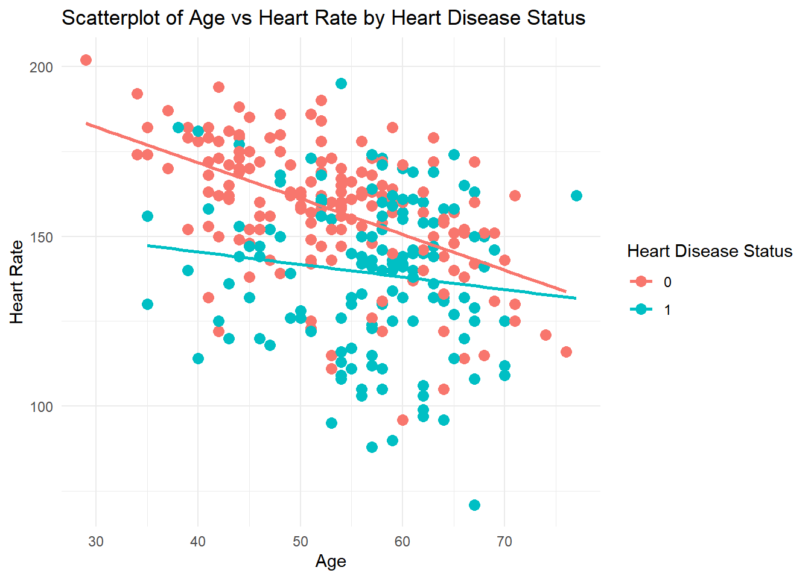
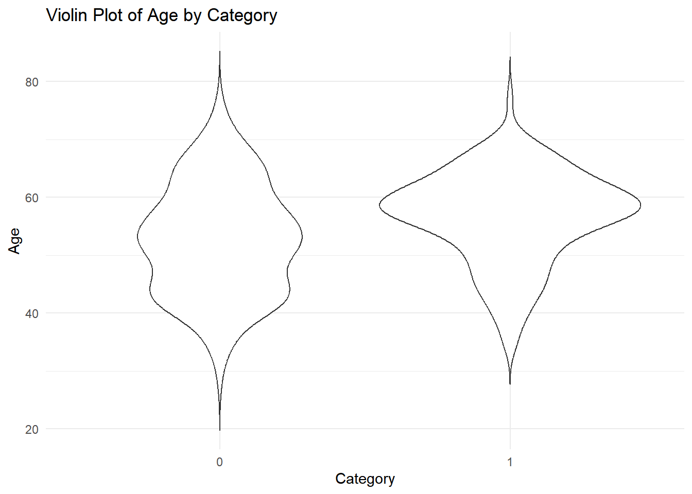
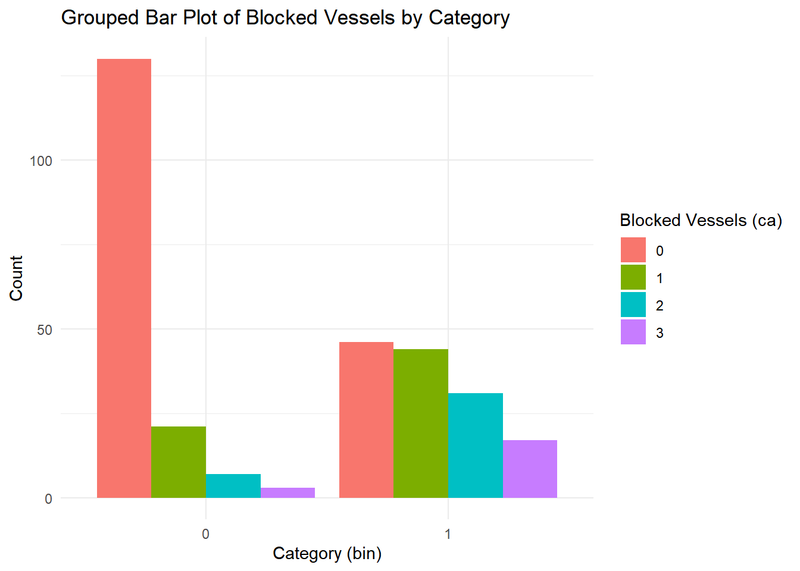
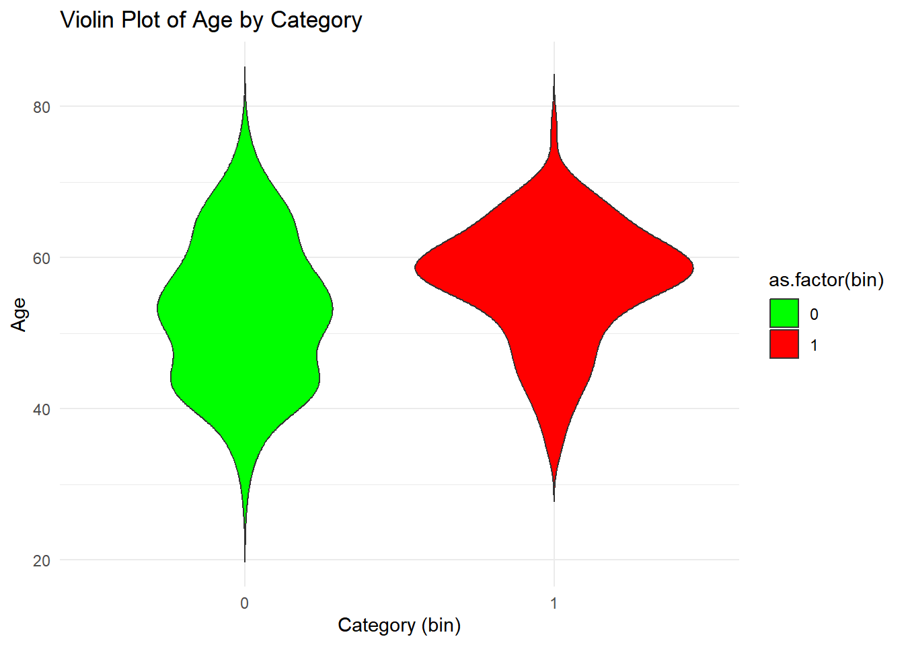
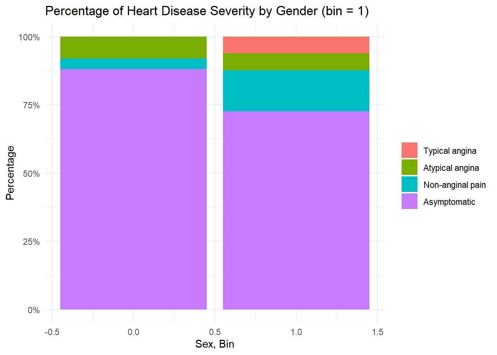
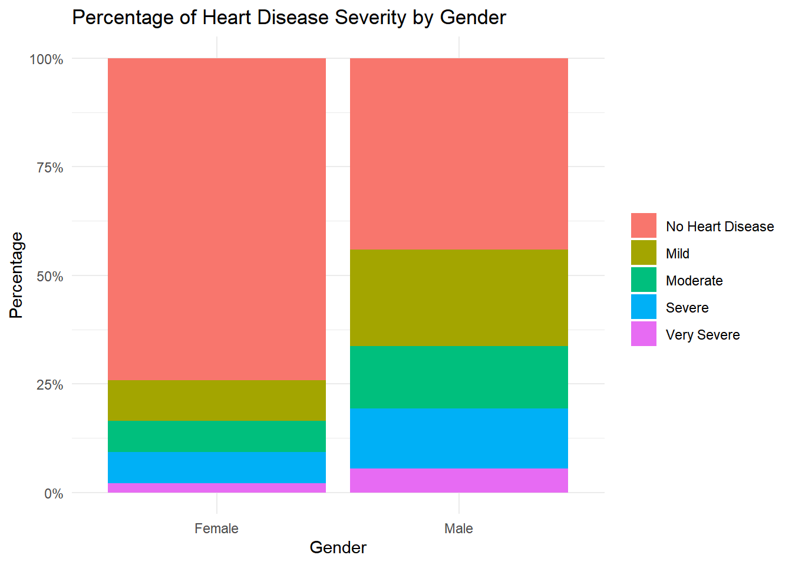
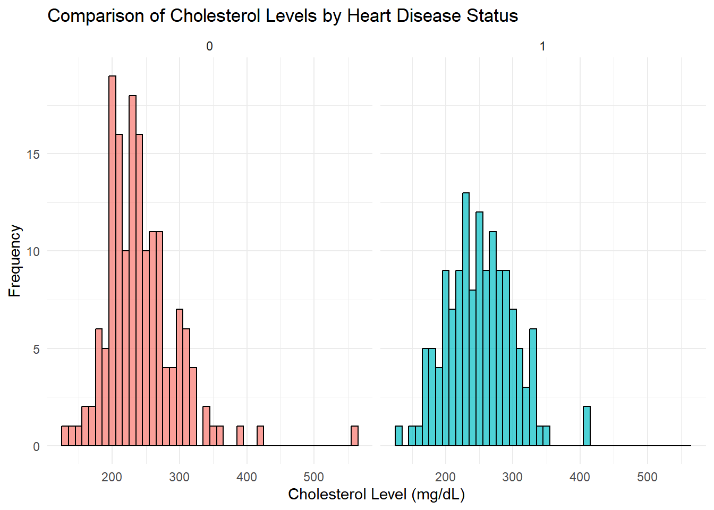

In this report we will look at a dataset that contains information about a group of patients undergoing an aniography (a type of X-ray to look at the blood vessels around the heart) where the researches collected several different attributes about the patients and also recorded the….
Introduction to the Heart Disease Dataset Understanding the underlying factors associated with heart disease is crucial for improving diagnosis, prevention, and treatment. In our project for the course Statistical computation and visualization, we focus on analyzing how demographic and clinical variables, such as age, sex, cholesterol levels, chest pain types, and heart rate, correlate with the presence or absence of heart disease. By exploring these variables, we aim to uncover patterns and trends that could help identify at-risk individuals and contribute to better healthcare strategies. We seek to answer key questions such as: • What is the distribution of age among heart disease patients? • Is there a significant difference in heart disease prevalence between men and women? • How do cholesterol levels vary in individuals with heart disease? • What types of chest pain are most commonly associated with heart disease, and how do they differ between genders? For this purpose, we have used the Heart Disease dataset from the UCI Machine Learning Repository, compiled by various researchers and featuring clinical data from 303 patients. This dataset provides a rich foundation for understanding the complex factors related to heart disease, offering insights into how specific demographic and health indicators are linked to cardiovascular health outcomes.
Methods
Data exploration
# Loading librarieslibrary(ggplot2)library(dplyr)
Attaching package: 'dplyr'
The following objects are masked from 'package:stats':
filter, lag
The following objects are masked from 'package:base':
intersect, setdiff, setequal, union
library(tidyr)
# Set directory to to where the data is savedsetwd("C:/Julie/epfl/MATH-517/test_project1")# Read dataset from csv fileheart_data <-read.csv("heart_disease.csv")# Remove unwanted columns (e.g., 'cholesterol' and 'age')heart_data <- heart_data %>%select(-trestbps, -fbs, -oldpeak, -thal) # Remove the rows with NA valuesheart_data <- heart_data %>%filter(!is.na(ca))# Create a new column 'heart_disease' based on binary valuesheart_data <- heart_data %>%mutate(bin =ifelse(num ==0, 0, 1)) # 0 for no heart disease, 1 for heart diseaseheart_data$bin <-as.factor(heart_data$bin) # Convert bin to a factorheart_data$num <-as.factor(heart_data$num) # Convert num to a factortable(heart_data$bin)
0 1
161 138
Here we are taking a look at the stucture and content of the dataframe in order to get an idea of characteristics of the data.
# Get the size of the dataframe(df)print(paste("The dataset has", nrow(heart_data), "rows and", ncol(heart_data), "columns."))
Warning: There was 1 warning in `summarize()`.
ℹ In argument: `across(where(is.numeric), mean, na.rm = TRUE)`.
ℹ In group 1: `bin = 0`.
Caused by warning:
! The `...` argument of `across()` is deprecated as of dplyr 1.1.0.
Supply arguments directly to `.fns` through an anonymous function instead.
# Previously
across(a:b, mean, na.rm = TRUE)
# Now
across(a:b, \(x) mean(x, na.rm = TRUE))
ggplot(heart_data, aes(x = age, y = thalach, color = bin)) +geom_point(size =3) +# Makes the points largergeom_smooth(method ="lm", se =FALSE) +# Add regression lines without confidence intervalslabs(title ="Scatterplot of Age vs Heart Rate by Heart Disease Status",x ="Age",y ="Heart Rate",color ="Heart Disease Status") +# Legend titletheme_minimal()
`geom_smooth()` using formula = 'y ~ x'

The ‘num’ columns contains the information about the persons heart disease on a scale of integers from 0 (no presence) to 4.
Be careful about conclutions. Look like there are less people
ggplot(heart_data, aes(x = bin, y = age)) +geom_violin(trim =FALSE) +labs(title ="Violin Plot of Age by Category",x ="Category",y ="Age") +theme_minimal()

ggplot(heart_data, aes(x = bin, fill =as.factor(ca))) +geom_bar(position ="dodge") +labs(title ="Grouped Bar Plot of Blocked Vessels by Category",x ="Category (bin)",y ="Count",fill ="Blocked Vessels (ca)") +theme_minimal()

Women have less angina than men.
ggplot(heart_data, aes(x = bin, y = age, fill =as.factor(bin))) +geom_violin(trim =FALSE) +scale_fill_manual(values =c("green", "red")) +# Specify colors for categorieslabs(title ="Violin Plot of Age by Category",x ="Category (bin)",y ="Age") +theme_minimal()

# Filter the data to include only rows where bin == 1filtered_data <- heart_data %>%filter(bin ==1)# Create the plot with the filtered dataggplot(filtered_data, aes(x = sex, fill =factor(cp))) +geom_bar(position ="fill") +# 'fill' will normalize the bars to percentagesscale_y_continuous(labels = scales::percent) +# Format y-axis as percentagesscale_fill_discrete(name ="Heart Disease Severity", labels =c("Typical angina", "Atypical angina", "Non-anginal pain", "Asymptomatic")) +labs(title ="Percentage of Heart Disease Severity by Gender (bin = 1)", x ="Sex, Bin", y ="Percentage") +theme_minimal() +theme(legend.title =element_blank())

# Convert 'sex' to a factor for labelingheart_data$sex <-factor(heart_data$sex, levels =c(0, 1), labels =c("Female", "Male"))# Create the plot with percentages by genderggplot(heart_data, aes(x = sex, fill =factor(num))) +geom_bar(position ="fill") +# 'fill' will normalize the bars to percentagesscale_y_continuous(labels = scales::percent) +# Format y-axis as percentagesscale_fill_discrete(name ="Heart Disease Severity", labels =c("No Heart Disease", "Mild", "Moderate", "Severe", "Very Severe")) +labs(title ="Percentage of Heart Disease Severity by Gender", x ="Gender", y ="Percentage") +theme_minimal() +theme(legend.title =element_blank())

# Create the plotggplot(heart_data, aes(x = chol, fill = bin)) +geom_histogram(binwidth =10, color ="black", alpha =0.7) +# Histogram with specified bin widthfacet_wrap(~ bin, scales ="fixed") +# Ensure both plots share the same y-axis scalelabs(title ="Comparison of Cholesterol Levels by Heart Disease Status",x ="Cholesterol Level (mg/dL)",y ="Frequency") +theme_minimal() +theme(legend.position ="none") # Remove the legend as we are already faceting

0: A lot around 200. 1: more above 200.
We expected bigger differnce. Maybe bias in dataset?
Referenses
The data:
Janosi, A., Steinbrunn, W., Pfisterer, M., & Detrano, R. (1989). Heart Disease [Dataset]. UCI Machine Learning Repository. https://doi.org/10.24432/C52P4X.